About
I care about technology that is useful and inclusive—open-source when possible, and designed around real constraints.
Research Interests
- Software Dev: designing and maintaining production systems, with a focus on reliability, performance, and scalability under real-world constraints.
- Wearables: sensing and embedded systems, low-cost instrumentation, and reliability in everyday environments.
- Digital Health: mobility and gait monitoring, usability and adherence as research constraints, and deployable evaluation.
Featured Project
I’m designing a low-cost smart insole using FSR sensors and a Raspberry Pi to measure plantar pressure during everyday walking. The system streams data via Bluetooth to a smartphone for logging and visualization, with a roadmap toward real-time feedback.
- Problem: Build a low-cost way to capture reliable real-world gait signals to support accessible monitoring and early risk detection beyond controlled lab settings.
- System: FSR-based sensing + embedded acquisition + phone-based visualization/logging.
- Methods: signal processing, feature extraction, and early work on ML-based gait profiling.
- Status: currently testing with a small group (3–4 people) and iterating on robustness and comfort.
- Next: personalized gait profiles and real-time alerts with careful validation.
This project combines wearable devices, circuit design, and accessibility-driven engineering—plus the companion mobile app I built myself, leveraging my software engineering experience to design the UX and implement the full workflow: Bluetooth data capture, real-time visualization, and analysis features.
Experience
Developed and maintained modules for a proprietary executive-facing web application used across 2,000+ branches, enabling efficient access, organization, and analysis of customer information to support credit decisions—impacting services that reach tens of millions of customers.
- Designed and implemented AML and anti-fraud strategy using AI/ML models for 90M+ customers across 25+ countries.
- Led full automation of inventory and medicine dispatch workflows.
- Built a scheduling system to digitize appointment creation and tracking.
Beyond the Lab
A curated view of what shapes how I work: curiosity, communication, design, and perspective.
Curiosity & Computational Thinking
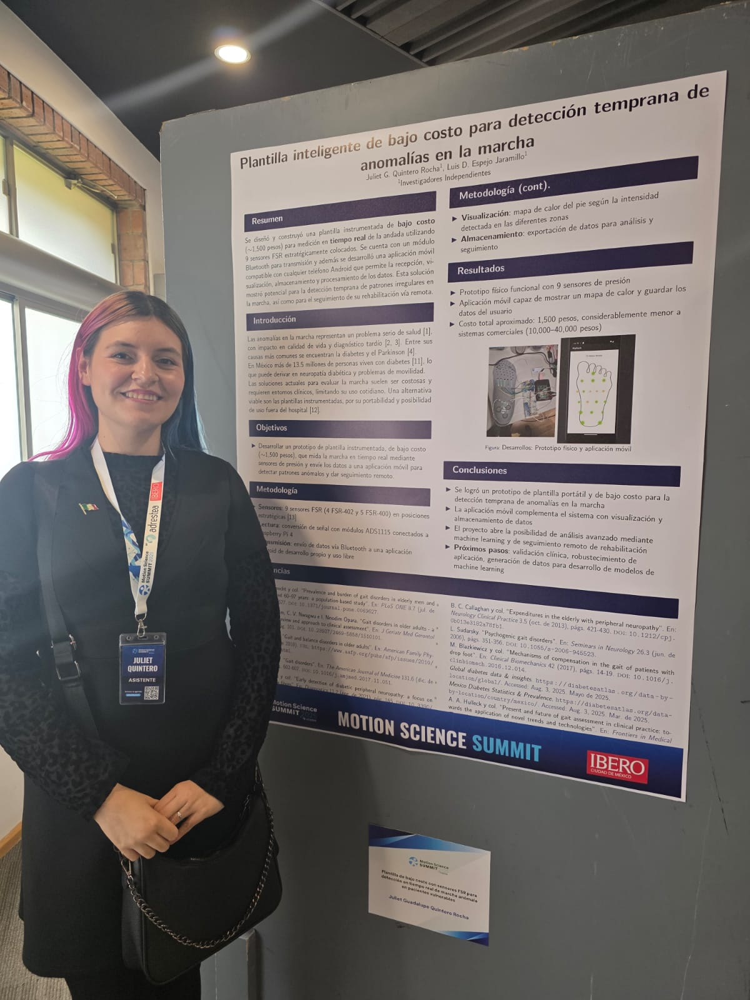
I read daily across science, history, culture, and technology. That habit fuels my research questions and helps me connect ideas across domains.
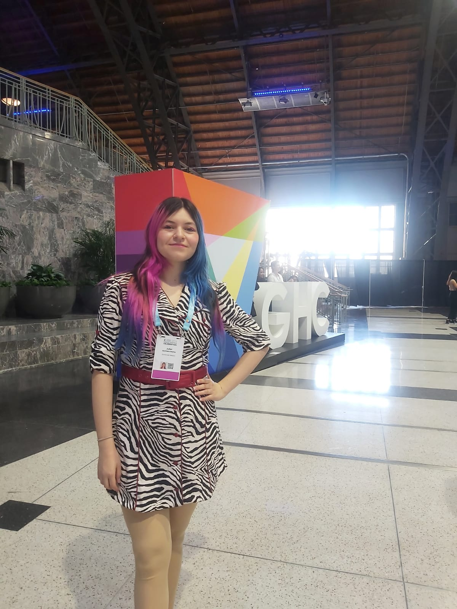
Programming is more than work for me—it’s a creative outlet for prototyping ideas and turning questions into systems that generate data. I’m especially drawn to projects where the pipeline matters as much as the model (sensing, signals, visualization, deployment).
I admire people and media that make technology more human. Stories about figures like Grace Hopper. Since I was a child, Canal Once—a free public channel run by a university in Mexico City—was a major source of inspiration for me. Its children’s educational programs were creative, clear, and deeply inspiring, and they sparked my interest in learning and sharing knowledge from an early age.

Speedcubing is my tangible way of thinking about algorithms—patterns, heuristics, and optimization under constraints. My personal best is around 19 seconds, and I like how it turns abstraction into practice.
Communication & Storytelling
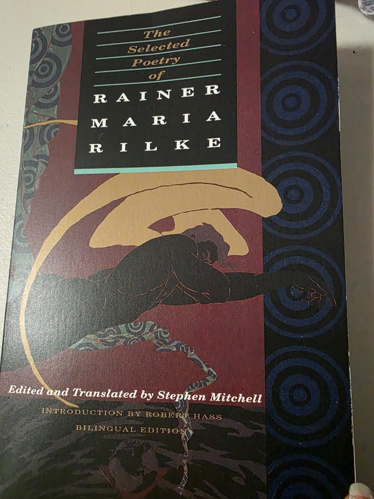
Poetry taught me precision: choosing words the way you choose variables, with meaning and intent. Writing in multiple languages helps me communicate the same idea to different audiences with clarity.
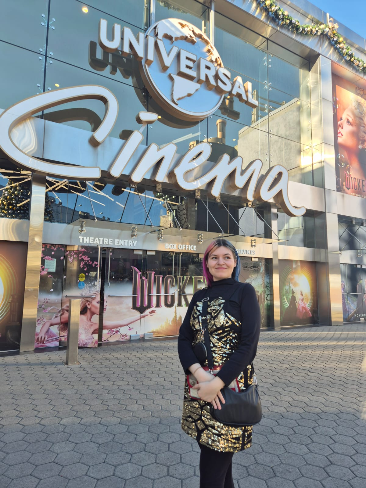
I enjoy analyzing how framing, sound, and silence shape perception and emotion. It’s a fun way to think about attention. I particularly enjoy horror films.
Design & Self-Expression
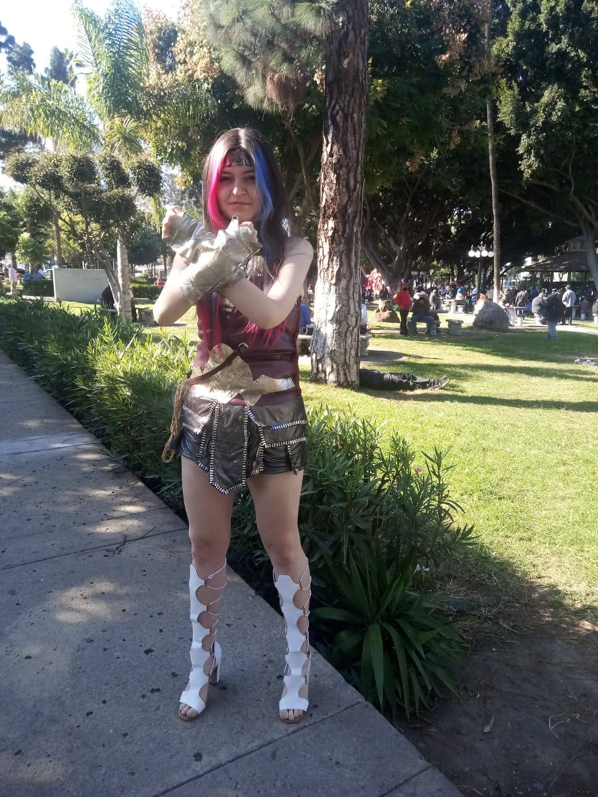
Clothing is one of my main forms of expression—color, texture, and silhouette are a kind of everyday design language. Small visual choices communicate mood and identity.
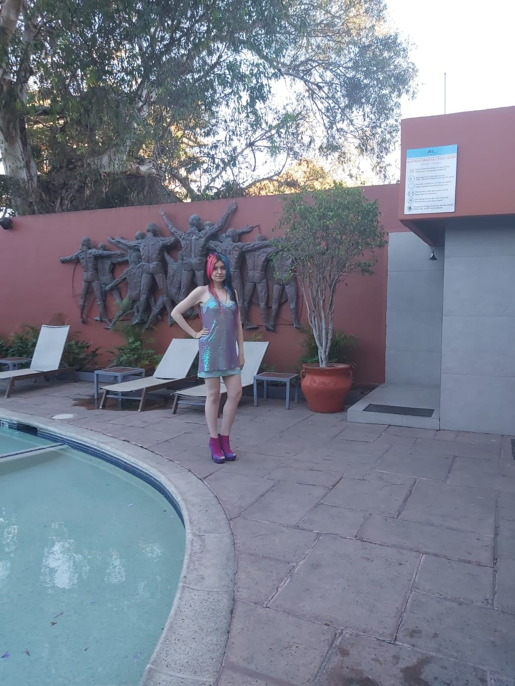
Taking modeling classes pushed me outside my comfort zone and helped me develop confidence and presence. It made me more comfortable presenting ideas, receiving feedback, and showing up in new environments.
Culture, Identity & Grounding
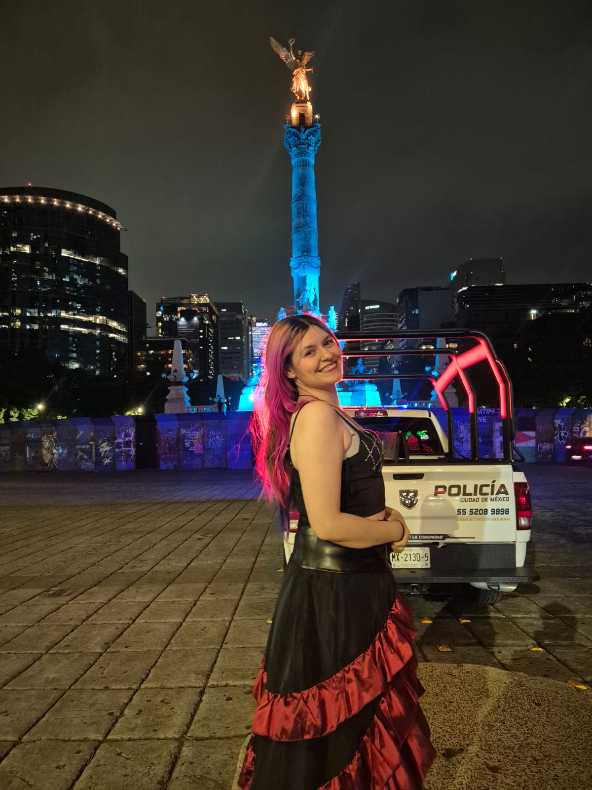
Mexico City inspires me with its layered history, museums, and neighborhoods—it feels like walking through multiple eras at once.
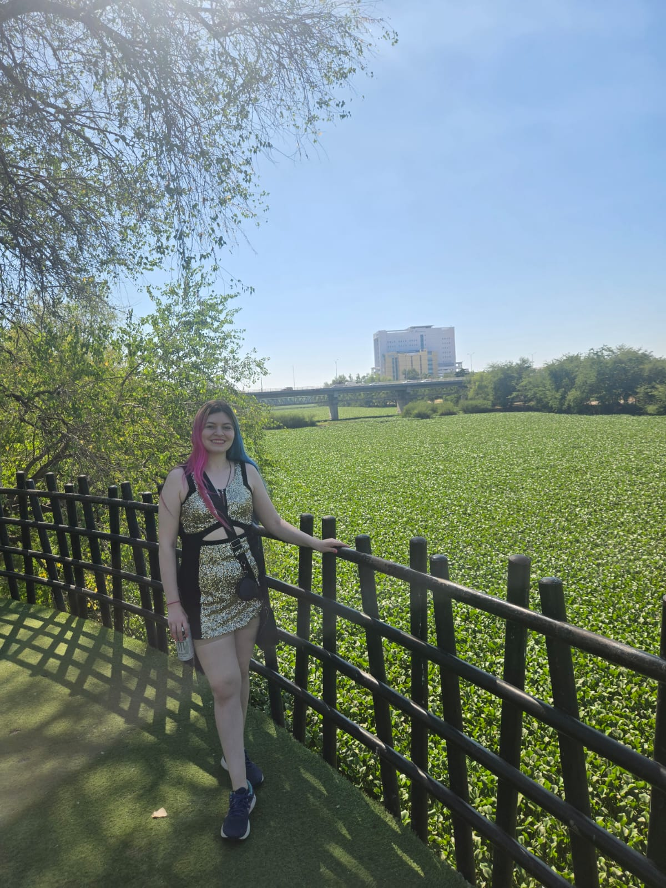
Being away from home made me value the culture I grew up with—music, accents, food, and everyday habits—in a deeper way. I also like that Northern banda has a little polka connection, cultures travel.
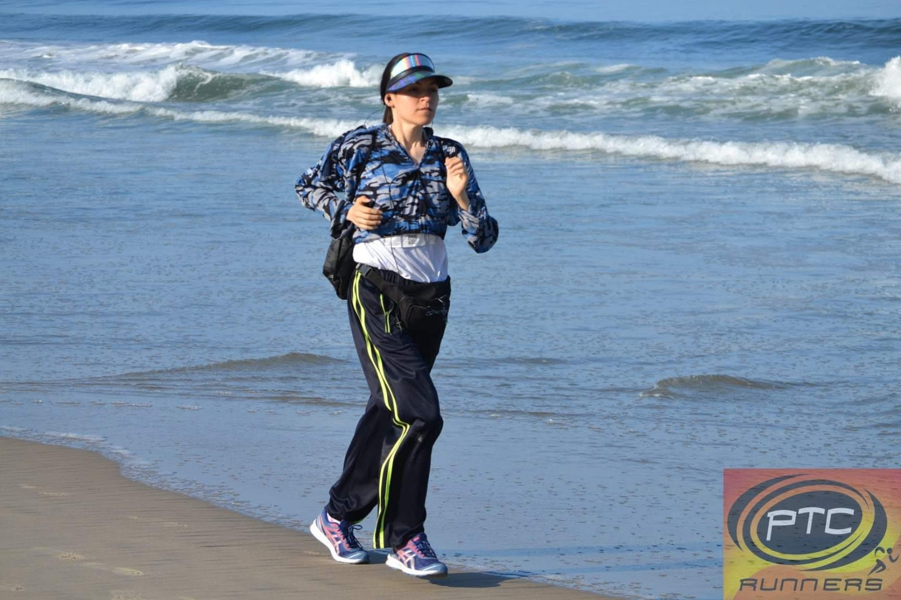
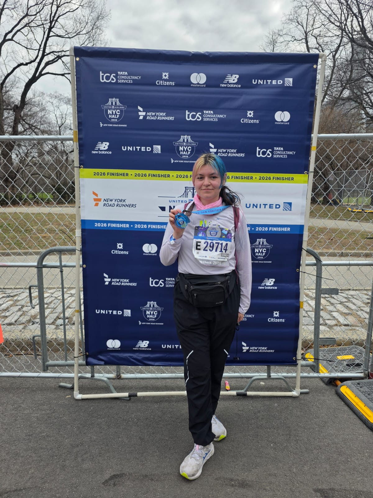
Running clears my mind and builds long-term consistency. I like it because progress comes from patience and iteration.
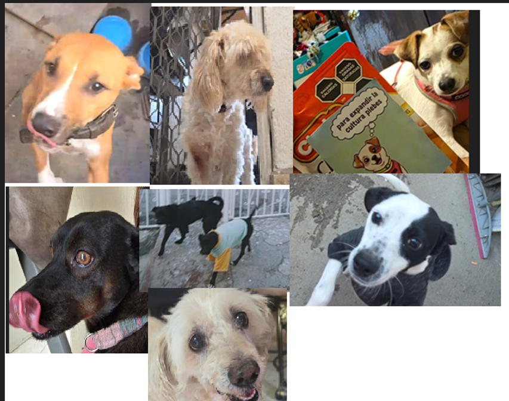
Dogs keep me grounded and make ordinary days better. They’re my reminder to stay present and human in the middle of ambitious goals.